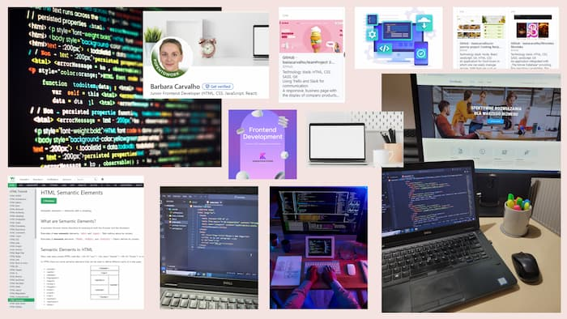

Coding
When it comes to coding, first, it was an idea for a new career path with great opportunities, a way to challenge myself and work on my self esteem (that can play on me tricks from time to time). But after my IT journey began, it surrounded me and my daily routine.
Coding often tries out all my limits. It involves countless hours of figuring out some aspects or problems that, at the beginning, seem impossible to solve. However, at the same time, it gives a great satisfaction. When I solve a problem or learn new skill, the feeling of joy appears. I sit to code for a few hours and find myself there for most of the day. It's a sign that coding is not only my goal for a next profession, but also my new hobby.
